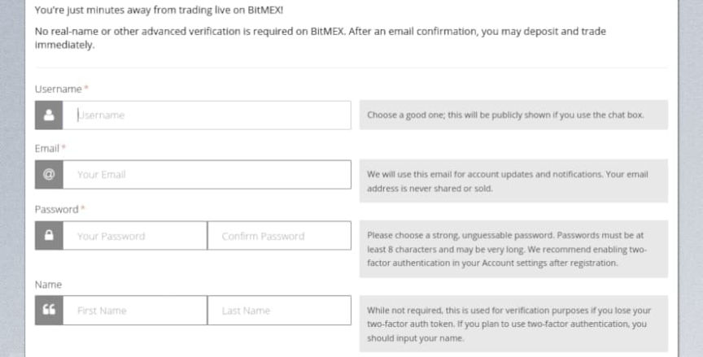
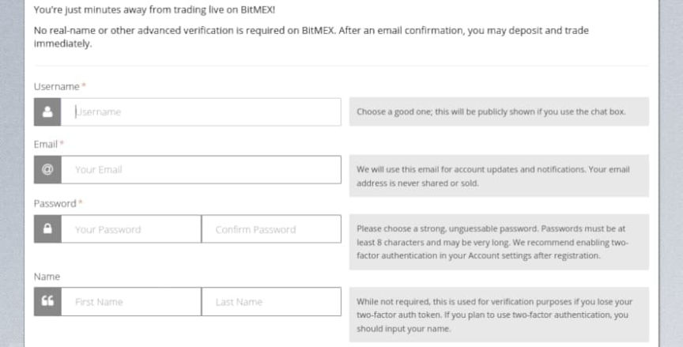

BitMEX Employee Admits Violating Bank Secrecy Act
~2 min read | Published on 2022-08-09, tagged Exchange, Pleaded-Guilty using 368 words.
A “high-ranking” employee of a cryptocurrency derivatives exchange pleaded guilty to violating the Bank Secrecy Act.
Gregory Dwyer, 39, worked as the Head of Business Development at the purportedly “off-shore” cryptocurrency derivatives exchange called the Bitcoin Mercantile Exchange or BitMEX. During Dwyer’s time at the exchange, he “willfully caused BitMEX to fail to establish and maintain an AML program, including a program for verifying the identity of BitMEX’s customers (or a ‘know your customer’ or ‘KYC’ program).” As a result of Dwyer’s failure to comply with U.S. financial regulations, BitMEX was “in effect a money laundering platform,” according to Damian Williams, the United States Attorney for the Southern District of New York said.
Feds charged Dwyer and BitMEX’s founders Arthur Hayes, Benjamin Delo, and Samuel Reed for aiding and abetting the company’s failure to comply with the Bank Secrecy Act.
Authorities said that BitMEX executives, including Dwyer, knew of their obligation to comply with U.S. regulations but remained in a state of non-compliance. Not only did they fail to implement anti-money laundering measures as required by law, BitMEX employees intentionally misled regulators. In one example in the U.S. Attorney’s announcement of the guilty plea, Dwyer and other BitMEX employees conducted a fake withdrawal from the U.S. market in 2015. The company pretended to implement controls to block users in the United States. Those controls never worked and did not prevent people in the United States from trading on the platform.

Among other tasks at BitMEX, Dwyer “collected and circulated data evidencing that BitMEX users included traders, and that the company earned revenue, from the United States.” On August 8, 2022, Dwyer pleaded guilty to one count of violating the Bank Secrecy Act. The charge carries a maximum penalty of five years in prison. Dwyer agreed to pay a $150,000 criminal fine in addition to whatever sentence he received.
Dwyer’s co-defendants Hayes, Delo, and Reed previously entered guilty pleas to the same charge. Hayes, the founder and former CEO of the company, received a sentence of two years probation.

High-Ranking Employee At Cryptocurrency Exchange Pleads Guilty To Bank Secrecy Act Violations | www.justice.gov, archive.is, archive.org
Gregory Dwyer, 39, of Australia and Bermuda, admitted violating the Bank Secrecy Act
Gregory Dwyer, 39, worked as the Head of Business Development at the purportedly “off-shore” cryptocurrency derivatives exchange called the Bitcoin Mercantile Exchange or BitMEX. During Dwyer’s time at the exchange, he “willfully caused BitMEX to fail to establish and maintain an AML program, including a program for verifying the identity of BitMEX’s customers (or a ‘know your customer’ or ‘KYC’ program).” As a result of Dwyer’s failure to comply with U.S. financial regulations, BitMEX was “in effect a money laundering platform,” according to Damian Williams, the United States Attorney for the Southern District of New York said.
Feds charged Dwyer and BitMEX’s founders Arthur Hayes, Benjamin Delo, and Samuel Reed for aiding and abetting the company’s failure to comply with the Bank Secrecy Act.
Authorities said that BitMEX executives, including Dwyer, knew of their obligation to comply with U.S. regulations but remained in a state of non-compliance. Not only did they fail to implement anti-money laundering measures as required by law, BitMEX employees intentionally misled regulators. In one example in the U.S. Attorney’s announcement of the guilty plea, Dwyer and other BitMEX employees conducted a fake withdrawal from the U.S. market in 2015. The company pretended to implement controls to block users in the United States. Those controls never worked and did not prevent people in the United States from trading on the platform.

BitMEX never implemented Know Your Customer controls.
Among other tasks at BitMEX, Dwyer “collected and circulated data evidencing that BitMEX users included traders, and that the company earned revenue, from the United States.” On August 8, 2022, Dwyer pleaded guilty to one count of violating the Bank Secrecy Act. The charge carries a maximum penalty of five years in prison. Dwyer agreed to pay a $150,000 criminal fine in addition to whatever sentence he received.
Dwyer’s co-defendants Hayes, Delo, and Reed previously entered guilty pleas to the same charge. Hayes, the founder and former CEO of the company, received a sentence of two years probation.
“Donated by BitMEX”
High-Ranking Employee At Cryptocurrency Exchange Pleads Guilty To Bank Secrecy Act Violations | www.justice.gov, archive.is, archive.org